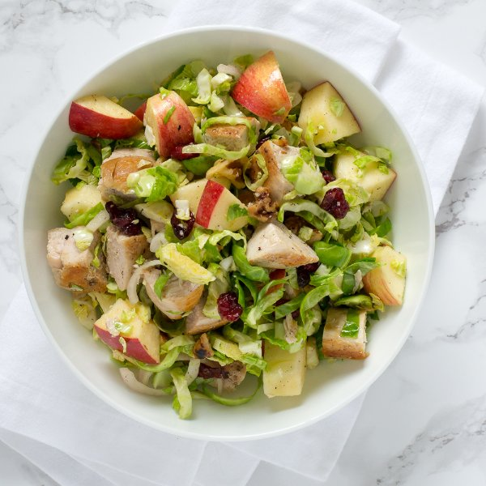

Chicken, Brussels Sprouts & Apple Salad with Toasted Walnuts & Cranberries

Prep Time
45 min
Nutrition (per serving)
657.9 kcalCalories
46.6 gProtein
40 gCarbs
37.1 gFat
Full nutrition table
| Calories | 657.9 kcal |
| Total fat | 37.1 g |
| Saturated fat | 5.1 g |
| Trans fat | 0.1 g |
| Cholesterol | 124.2 mg |
| Sodium | 124 mg |
| Carbohydrates | 40 g |
| Fiber | 10.5 g |
| Sugars | 21.1 g |
| Protein | 46.6 g |
| Potassium | 1441.6 mg |
| Calcium | 107.7 mg |
| Iron | 3.9 mg |
| Vitamin A | 1391.2 IU |
| Vitamin C | 150.2 mg |
| Vitamin D | 1.7 IU |
Cookware
Ingredients
- 1 ½ lbBrussels sprouts
- 1 ½ lbchicken breasts, boneless skinless
- ¼ cupdried cranberries
- 2Gala apples
- 2shallots
- ½ cupwalnuts
- apple cider vinegar
- black pepper
- Dijon mustard
- extra virgin olive oil
- honey
- salt
Steps
- Wash and dry the fresh produce.1 ½ lb brussels sprouts
2 Gala apples - Roughly chop the walnuts.½ cup walnuts
- Preheat a skillet over medium-high heat.
- While the skillet heats up, pat the chicken breasts dry with paper towels and place on a plate; rub with olive oil and season generously with salt and pepper on both sides.1 ½ lb chicken breasts, boneless skinless
1 tbsp extra virgin olive oil
1 tsp salt
½ tsp black pepper - Add the walnuts to the skillet and toast, stirring frequently, until fragrant and lightly browned, 2 to 3 minutes. Transfer to a bowl. Wipe out the pan.
- Once the walnuts have been transferred, reduce the heat to medium and place the chicken breasts in the skillet; cook until the chicken is golden brown and cooked through (check doneness with a thermometer or cut into the chicken with a knife), 6 to 8 minutes per side. Once done, transfer the chicken to plate.
- While the chicken cooks, trim off and discard the stems ends of the Brussels sprouts, then remove the outer layer of leaves; halve the sprouts lengthwise, then thinly slice crosswise. Transfer to a large salad bowl.
- Trim off and discard the ends of the shallots; peel and halve the shallots lengthwise, then thinly slice crosswise into half-rounds and add to the salad bowl.2 shallots
- Once the chicken has been transferred, add the Brussels sprouts and shallots to the skillet; cook, stirring frequently, until softened, 3 to 4 minutes. Once done, transfer back to the salad bowl.
- While the sprouts cook, quarter the apples lengthwise, then cut out the core and stem from each section; large dice the apples into ¾-inch cubes and transfer to the salad bowl.
- Add the toasted walnuts and dried cranberries to the salad bowl.¼ cup dried cranberries
- In a small bowl, combine and whisk together olive oil, vinegar, honey, Dijon, salt, and pepper.6 tbsp extra virgin olive oil
2 tbsp apple cider vinegar
1 tsp honey
1 tsp Dijon mustard
½ tsp salt
¼ tsp black pepper - When cool enough to handle, large dice the chicken breasts into ¾-inch cubes. Add to the salad bowl.
- Pour the dressing over the salad and toss to combine.
- To serve, divide the salad between plates or bowls. Enjoy!